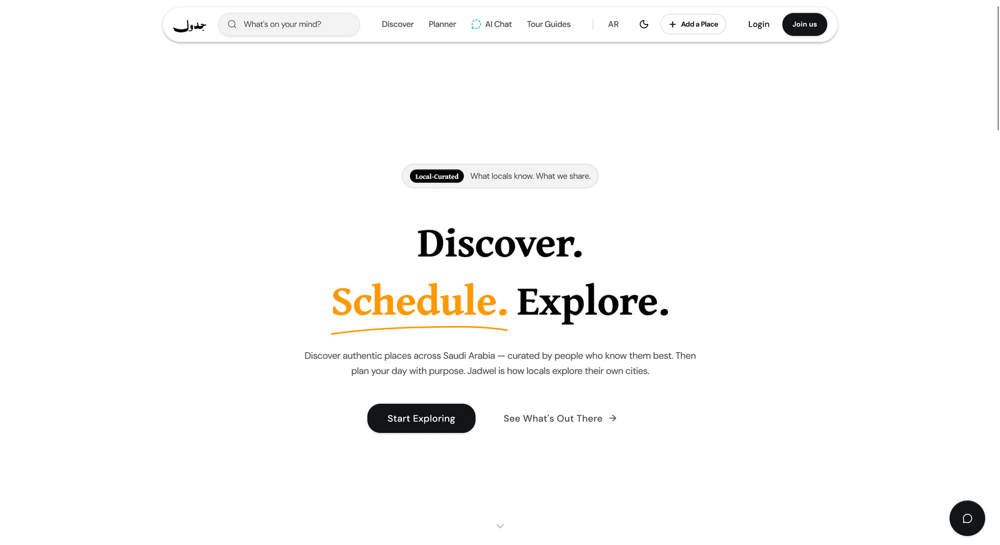
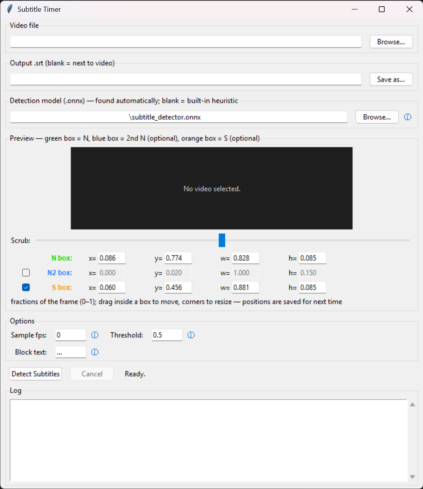
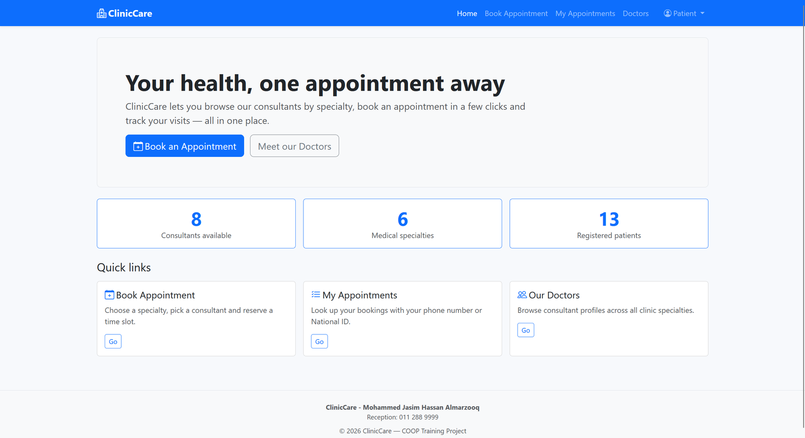
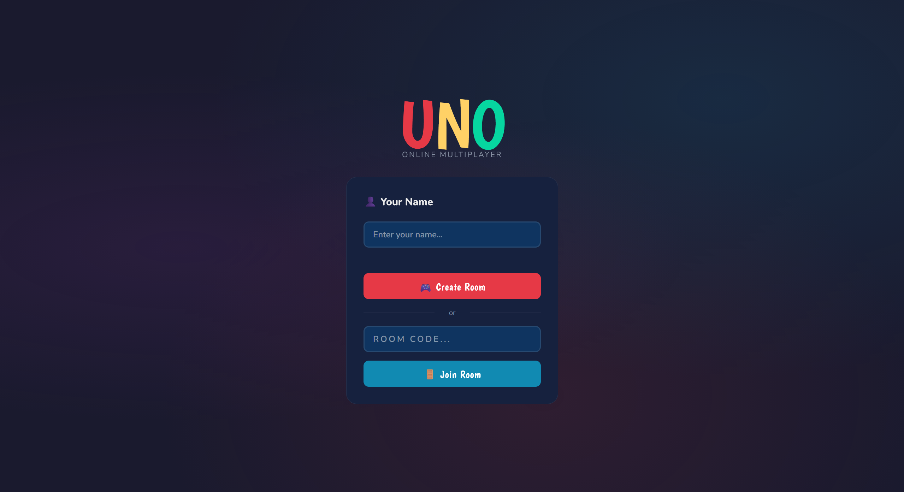

Jun – Aug 2026
Cooperative Trainee
King Fahad Medical City · Remote
Eight-week training placement. Designed, built, tested, and deployed ClinicCare (above) end to end in ASP.NET and SQL Server.
محمد جاسم المرزوق
Fresh Computer Science graduate from Imam Abdulrahman Bin Faisal University with a strong foundation in cybersecurity and hands-on experience in artificial intelligence and full-stack development. Built a production-grade system as a graduation project — CI/CD pipelines, end-to-end testing, database migrations, and API integration — and looking for a role where I can apply these skills, gain industry exposure, and grow as a collaborative, detail-oriented software professional.
Four projects, four different problem spaces: a production web platform, a computer-vision desktop tool, a real-time multiplayer game, and a clinical management system.

A travel discovery and scheduling platform for Saudi Arabia that surfaces lesser-known places, builds itineraries, and answers questions through a RAG-powered assistant — fully bilingual in Arabic and English across 45+ pages.
Built as a team graduation project and run like a real product: every pull request is linted, type-checked, built, and end-to-end tested before an automated deploy to Vercel. I owned the delivery infrastructure, the database layer, and the integrations that tie the platform to outside services.

A desktop tool that watches a video for you and works out exactly when each burned-in subtitle appears and disappears,
producing a ready-to-edit .srt file. It replaces hours of frame-by-frame scrubbing with a stopwatch.
Instead of OCR or speech recognition, it uses a small CNN I trained from scratch to classify every sampled frame as no subtitle, normal style, or special style. The user positions up to three independently-toggled crop boxes on a preview — two for normal-style subtitles and one for a special stacked style — and a single pass classifies and times all of them together, then writes the result out as a standard subtitle file. Trained in PyTorch, exported to ONNX, and run through OpenCV's DNN module so the packaged app has no PyTorch dependency.
.exe for non-technical users.

A clinic appointment management system built from requirements to live deployment over an eight-week training placement.
Three roles — admin, doctor, and patient — each with their own views: patient and doctor management, appointment booking with cascading filters (department → doctor → available slot), and an admin dashboard. The database does real work, with stored procedures, triggers, and indexes rather than logic pushed into the application.

A full multiplayer UNO game for up to 15 players per room, playable in any browser with nothing to
install — built entirely on Node.js's built-in http module and deployed as a Docker
container on Hugging Face Spaces.
One player creates a room and gets a 6-letter code; everyone else joins with it and the host starts the game once at least two people are seated. The full rule set is implemented — number cards, Skip, Reverse, Draw Two, Wild and Wild Draw Four, draw stacking, UNO callouts with a catch window — plus a rematch flow with a running win scoreboard.
package.json lists no runtime dependencies at all — the WebSocket handshake, frame parsing, and keepalive ping/pong are hand-implemented over Node's raw http module instead of pulling in a library.
node server.js locally, or as a Docker image behind Hugging Face Spaces' proxy — including the periodic pings needed to keep the proxy from dropping idle sockets.
What I've used in real projects, not a wish list.
King Fahad Medical City · Remote
Eight-week training placement. Designed, built, tested, and deployed ClinicCare (above) end to end in ASP.NET and SQL Server.
Imam Abdulrahman Bin Faisal University · Dammam
GPA 4.22 / 5.00, Very Good standing. Coursework grounded in cybersecurity, with hands-on work in machine learning and full-stack development.
I'm looking for a software engineering role where I can keep shipping. Email is the fastest way to reach me.